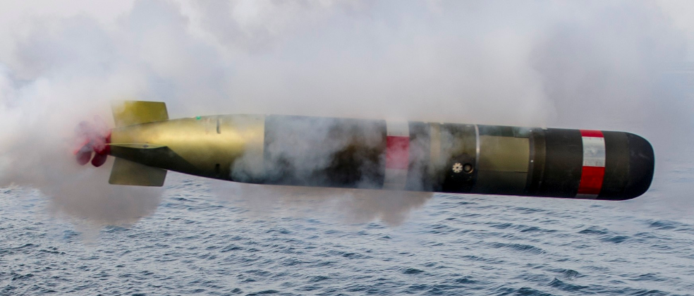
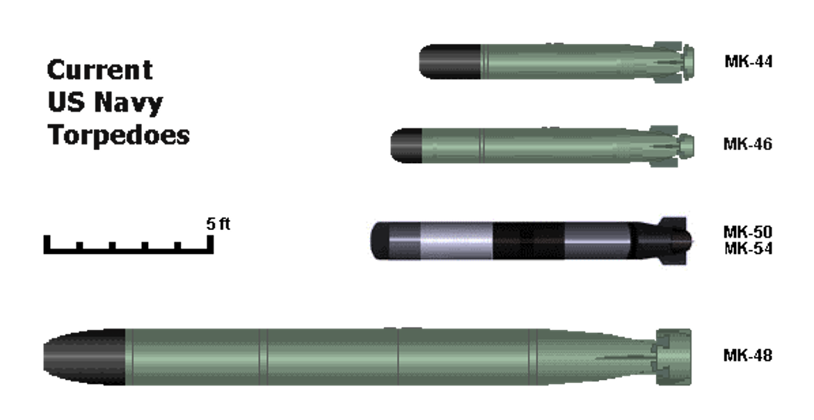
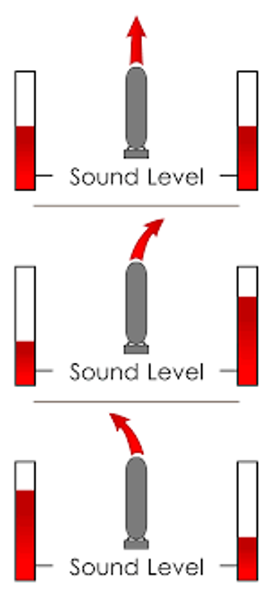
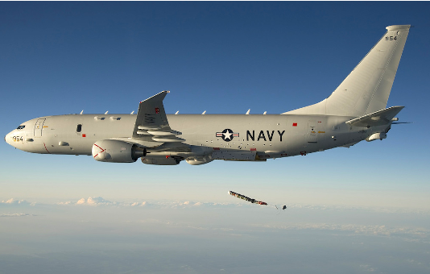
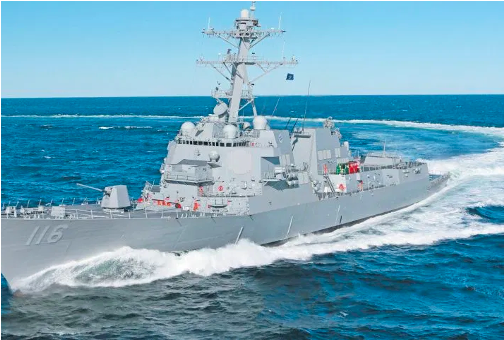
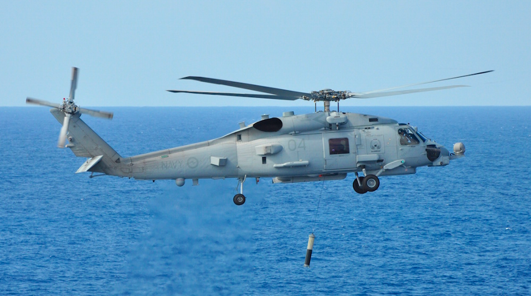
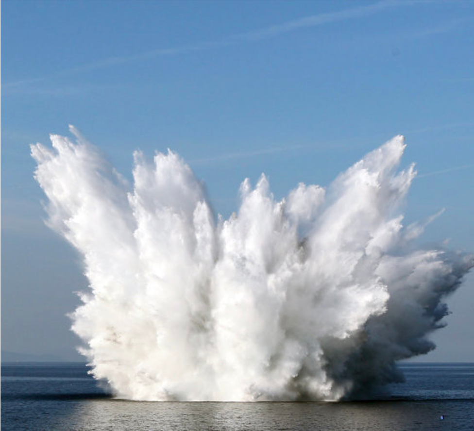
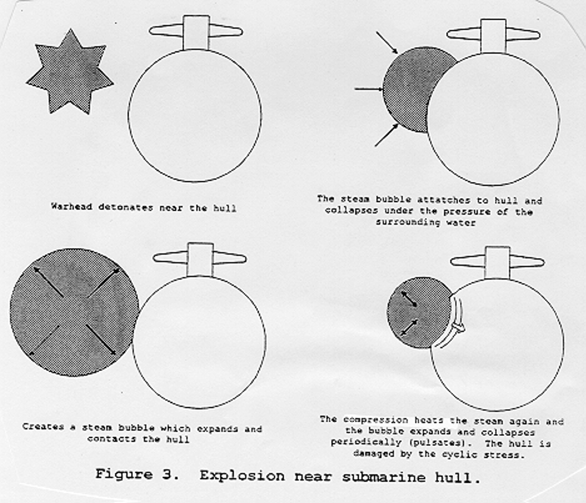

The MK54 Torpedo
MIDN Hannah LaVigne
MN 2004

The basics
- Started in 1990s
- Introduce in 2004
- Lightweight Hybrid Torpedo (LHT)
- Raytheon
Built from
- MK 48 & MK 50 Torpedoes
- Advanced capability programs
- MK 46 Torpedo
- Warhead
- Propulsion System

Locating
- Active acoustic homing
- Semi-active acoustic homing

Platforms
- Helicopters
- Fixed Winged Aircraft
- Surface Ships



Explosive
- MK 46 Torpedo’s warhead
- ~97 pounds
- Polymer bonded explosive
- Chemical explosion

Damage
- Doesn’t run into target
- Detonates close to target
- Creates steam bubble
- Cyclic stress

Sources
- “MK 54 - TORPEDO.” The US Navy, United States Navy, 9 Dec. 2013, www.navy.mil/navydata/fact_display.asp?cid=2100&tid=1100&ct=2.
- “MK 54 Lightweight Torpedo.” Raytheon Technologies, Raytheon Technologies, www.raytheon.com/capabilities/products/mk54.
- “MK-54 Torpedo.” Military.com, www.military.com/equipment/mk-54-torpedo.
- Payne, Craig M. Principles of Naval Weapon Systems. Naval Institute Press, 2006.
- Venna, Srivani. “Aerojet to Develop Propulsion System for US Navy's MK 54 Torpedo.” Naval Technology, 25 Feb. 2020, www.naval-technology.com/news/aerojet-propulsion-mk-54/.
- Submarines
- Submarines
- Submarines
- Submarines